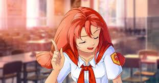

в два толстых хвоста. Весёлая, непоседливая, из-за детской непосредственности не всегда осознаёт последствия своих действий.
Из-за постоянных и не всегда добродушных подколок и розыгрышей часто конфликтует с обитателями Совёнка, кроме своей соседки по домику и подруги Алисы, часто участвующей в проделках вместе с ней. Однако, обиду на Ульяну никто долго не держит.
Ульяна имеет рут с хорошей и плохой концовками. Отношения, возникающие с ней, ближе к дружбе, чем к любви. Семёну придется подыграть в проделках и вступиться за неё перед Ольгой Дмитриевной.
Именно она олицетворяет собой всю суть детских (пионерских) лагерей — беззаботное веселье, приколы, пионерскую дружбу и взаимовыручку.